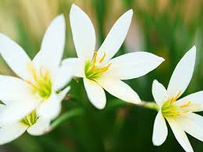

Types of flowers

Roses are used to symbolise love, passion and romance

Sunflowers represent innocence, purity and joy
Orchids represent beauty, grace, and wealth

Lily's can symbolise death or beauty and resurrection.